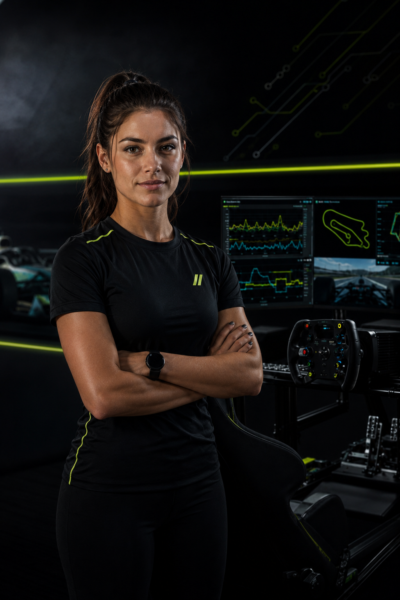
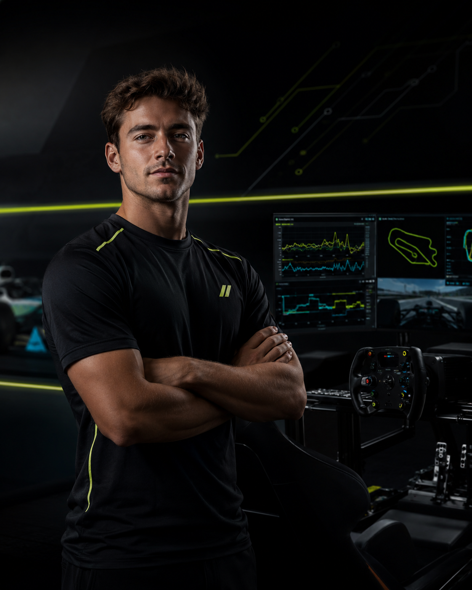

![APEX]()
FUNDAMENTOS DE TELEMETRÍA
Aprendés qué datos mirar, cómo interpretarlos y por qué son clave para entender tu rendimiento en pista.
En el curso ADVANCED vas a aprender a mejorar tu rendimiento a partir del análisis de datos, la lectura de telemetría y la comparación de vueltas. La idea es que dejes de manejar solo por intuición y empieces a entender qué pasa en cada curva, en cada frenada y en cada decisión dentro de la pista.
A lo largo del curso vas a trabajar con herramientas de análisis para detectar errores, corregir trazadas, mejorar tu consistencia y tomar decisiones más inteligentes durante la carrera. No se trata solamente de bajar tiempos, sino de construir un método de entrenamiento que te permita evolucionar vuelta tras vuelta.
INSCRIBIRMEEn cada clase se trabaja un aspecto clave del rendimiento: desde la telemetría básica hasta la estrategia de carrera, combinando análisis, práctica y seguimiento personalizado.
Aprendés qué datos mirar, cómo interpretarlos y por qué son clave para entender tu rendimiento en pista.
Comparás trazadas, frenadas y aceleraciones para detectar dónde perdés tiempo y cómo corregirlo.
Trabajás sobre tandas largas para sostener tiempos, cuidar neumáticos y mantener concentración.
Aprendés a tomar decisiones en clasificación, largada, pits y gestión de incidentes.
“NO ALCANZA CON GIRAR MÁS: HAY QUE ENTENDER QUÉ TE ESTÁ DICIENDO CADA DATO PARA CONVERTIR CADA ERROR EN UNA MEJORA.”
Acompañá a los pilotos en el análisis de sus vueltas, ayudándolos a entender qué pasa detrás del tiempo en pista. A través de la telemetría, la comparación de datos y la lectura de trazadas, detecta errores, oportunidades de mejora y patrones de manejo.
Su trabajo no es solo decir dónde frenás tarde o dónde perdés velocidad, sino ayudarte a tomar decisiones: cómo encarar una curva, cuándo acelerar, cómo mantener la consistencia y cómo transformar los datos en rendimiento real.
Con un seguimiento personalizado, te guía para que cada sesión tenga un objetivo claro y puedas evolucionar con método, precisión y confianza.


No hace falta saber analizar datos desde cero, pero sí es recomendable tener experiencia manejando en simulador y conocer conceptos básicos de pista.
Una computadora, simulador instalado, volante o cockpit y conexión estable para las clases en vivo.
Sí. Las sesiones quedan disponibles para que puedas revisar correcciones, ejercicios y análisis de vuelta.
Sí. El programa incluye seguimiento 1:1 para revisar tu evolución y ajustar el plan de mejora.